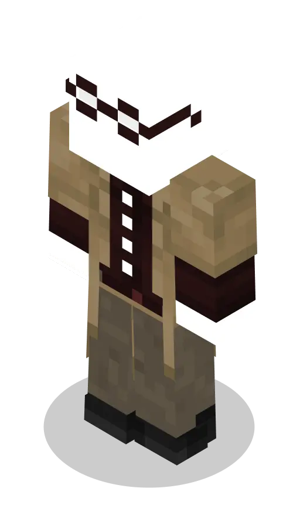

Российская империя
Вы окунётесь в мир новых приключений!
Вас ждёт атмосферное выживание,
новые знакомства, куча эмоций
и многое другое.


Мы Донецк Самый дружелюбный город Сейчас самые большие по населению и имеем кучу хороших взаимоотношенмй С нами такие города как: "Санкт-Петербург, Москва, Омск" и так далее Присоединяйтесь к нам Всему научим и все расскажем.
Российская империя - это военно-политический РП сервер Майнкрафт со своими уникальными механиками и оружием! Тут ты можешь создать свой город или вступить в Альянс. Много разных вариантов развития вашего города.